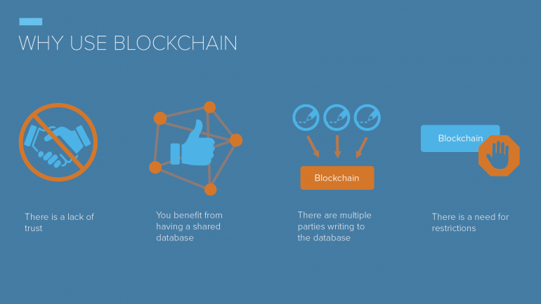

随着区块链技术改变我们的世界，了解区块链技术或传统数据库之间的差异非常重要。哪个更适合你的用例？有可能不是每个项目或用例都需要相同的技术解决方案。此外，区块链和数据库的使用可以相互补充。你可能不一定需要选择一个。因此，为您的用例找到正确的组合非常重要。区块链和数据库之间有几个关键的区别。
区块链特有的主要功能之一是可以建立起源地。通过追踪数字记录的出处，人们可以确定它是如何创建的，它的历史，所有权和保管顺序，存储位置以及记录的完整性。区块链能够向您显示数据集的当前版本以及同一数据集的每个先前版本，并带有时间戳和密码证明，这些数据没有被更改。每个条目都永久写入区块链，不能更改。如果您不信任您正在使用的其他方而不更改数据集，则这种做法非常有用。由于各方（即运行协议的计算机或“节点”）互相检查对方的工作，并同意进入区块链，所以信任得到维护，确保数据是不变的和真实的。区块链是分散的，添加数据的能力不限于中央资源。相反，数据库都依赖于客户机 - 服务器体系结构，服务器通常是集中式的。
现在我们来谈谈数据库。像区块链一样，现代数据库可以存储历史和以前版本的数据。数据库比区块链更有效率。区块链的重要区别在于建立信任和出处。数据库被设计为访问对象的当前状态，并且它的历史可以被轻易擦除。区块链虽然缓慢笨重，却是不变的。数据库通常由中央主管部门管理，所有参与数据库的人员都表现出对中央当局诚实交易的信任。没有必要证明数据集以前的版本，因为各方都相信中央当局公平管理，而不是偏向一方。

如果存储或共享数据方之间缺乏信任，则可以考虑使用区块链。 区块链和传统数据库之间的这些区别将有助于确定哪种更适合您的用例：
| 区块链 | 数据库 |
|---|---|
| 分散控制没有中央权力 - 对于当事人彼此之间缺乏信任的情况，数据是不可变的，因为当事人可以查看和验证来自任何组织或时间框架的散列的数据。 | 集中控制管理员或授权者 - 各方信任管理员，但是如果拥有网络的主管当局受到威胁，所有驻留在网络中的数据也会受到影响。 |
| 有历史记录 - 除当前快照以外，还包括对审计有用的健壮数据集，以及数据可能需要超过其即时使用量的任何实例。 条目有时间戳，并给出加密证明数据没有改变。 | 没有历史记录 - 数据库中的信息在特定时刻是最新的。 没有必要证明它没有改变，尤其是因为任何有权访问数据库的人都可以编辑条目。 |
| 没有数据保密 - 区块链中的所有内容都可以通过区块链访问。 | 数据保密 - 仅限数据库成员允许访问。 |
| 较慢的性能时间 - 节点通过在运行该协议的所有节点之间使用对等系统检查添加到区块链的工作来建立共识。 | 更快的执行时间 - 由于信任被假定，处理事务毫不犹豫或滞后。 |
如果你正在寻求信任和不变性，区块链解决方案可能是你最合适的。
如果你需要保密和性能，数据库可能是你最合适的。